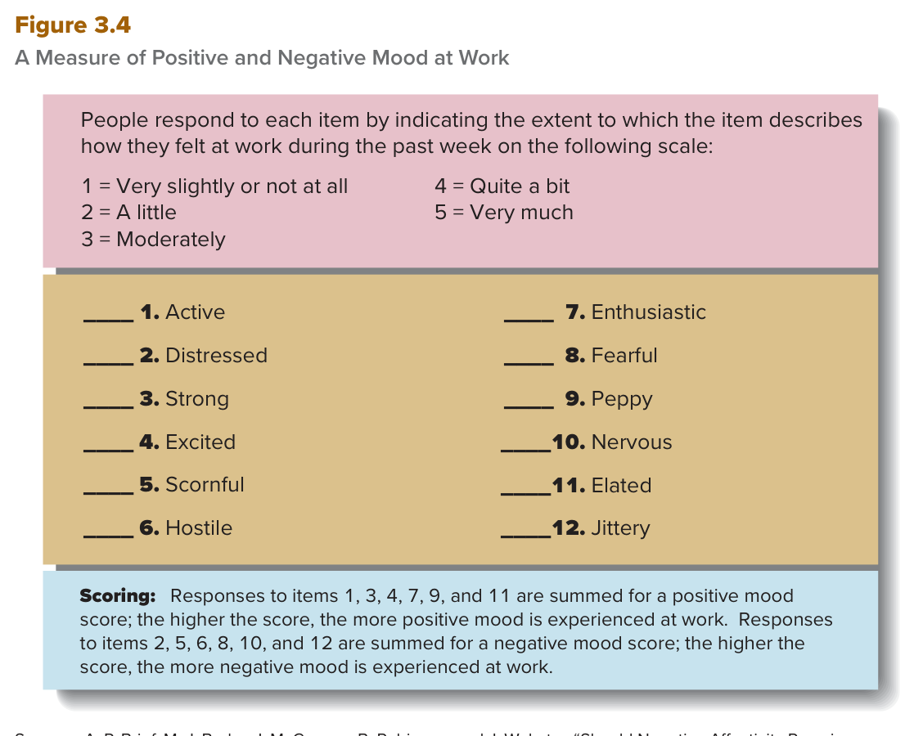
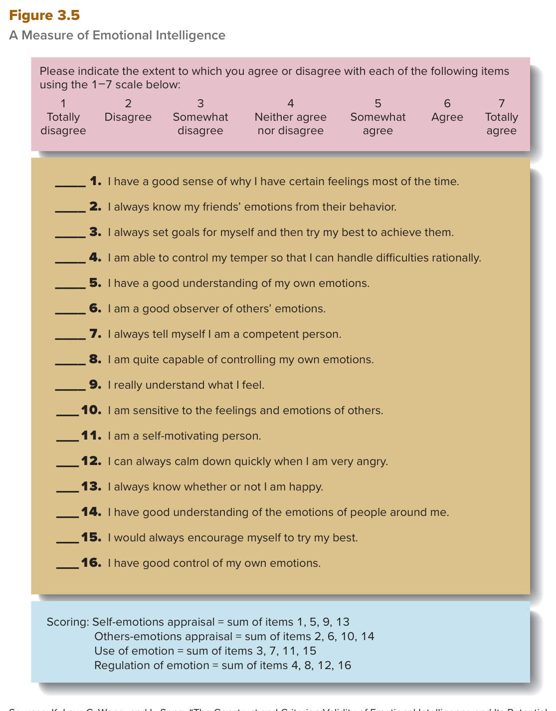

MGT 102 · Chapter 3 · Section 3 of 4:
Moods, Emotions, and Emotional Intelligence
Objective LO3-3: Appreciate how moods and emotions influence all members of an organization.
Objective LO3-4: Describe the nature of emotional intelligence and its role in management.
So far in this chapter you studied personality traits, then values and attitudes. Now comes the last piece of the manager as a person: how the manager actually feels while managing — moods and emotions — and then the ability that lets the manager deal with those feelings: emotional intelligence.
There are only two kinds of questions here: definition questions (they give you a definition and ask for the term, or they give you a scenario and ask which term fits), and figure numbers (how many items? which item goes with which mood? what are the four dimensions?). Memorize the numbers from now: three differences between a mood and emotions, 12 items in Figure 3.4 (6 positive + 6 negative), 16 items and four dimensions in Figure 3.5, two halves in the definition of emotional intelligence, and three interpersonal roles that it helps with.
You already met these ideas in Arabic. This page gives you the same ideas in English, because your textbook and your exam are in English.
The book opens the section with a simple example: just as you are sometimes in a bad mood and at other times in a good mood, so are managers. Then it gives you two very short definitions — learn them word for word in English, because they come on the exam as they are:
| Term | The definition, word for word | What it means |
|---|---|---|
| mood | A feeling or state of mind. | General, longer, and usually not tied to one clear cause. |
| emotions | Intense, relatively short-lived feelings. | Strong feelings that do not last long, and that are tied to their cause. |
And the difference between them is exactly three points — not more, not fewer:
The relation between the two (a point they love on the exam): once whatever has triggered the emotion has been dealt with, the feeling does not disappear — it may linger in the form of a less intense mood.
The book's own example: a manager gets very angry when an employee has engaged in an unethical behavior. Once the manager decides how to address the problem, the anger decreases in intensity — but the manager stays in a bad mood for the rest of the day, even without thinking directly about the incident. So: the emotion is gone, the mood is still there.
A mood is a feeling or state of mind. When people are in a positive mood, they feel excited, enthusiastic, active, or elated. When people are in a negative mood, they feel distressed, fearful, scornful, hostile, jittery, or nervous.
Emotions are more intense feelings than moods, are often directly linked to whatever caused the emotion, and are more short-lived. However, once whatever has triggered the emotion has been dealt with, the feelings may linger in the form of a less intense mood.
The book gives you the very words a person feels in each mood, and these words are the items of the scale in Figure 3.4. Learn which word belongs to which mood:
| Positive mood | Negative mood |
|---|---|
| excited · enthusiastic · active · elated | distressed · fearful · scornful · hostile · jittery · nervous |
What is the link between mood and personality? (a direct link back to the first section of the chapter)

This is Figure 3.4 in the book. The person answers 12 items, and shows
how well each item describes how they felt at work during the past week, on a 5-point scale:
1 = Very slightly or not at all · 2 = A little ·
3 = Moderately · 4 = Quite a bit ·
5 = Very much.
The 12 items in order: 1. Active · 2. Distressed · 3. Strong ·
4. Excited · 5. Scornful · 6. Hostile · 7. Enthusiastic · 8. Fearful ·
9. Peppy · 10. Nervous · 11. Elated · 12. Jittery.
Scoring: you sum items
1, 3, 4, 7, 9, 11 (six items) to get the positive mood score — the higher the score, the more positive mood is
experienced at work. And you sum items 2, 5, 6, 8, 10, 12 (six items) to get the negative mood score.
The most important point when you read it: positive and negative are two separate scores, not two ends of one line —
so a person can score high on both. And what gets asked: the number 12 and the 6 + 6 split,
and which word belongs to which mood (Elated → positive, Jittery → negative).
People who score high on negative affectivity are especially likely to experience negative moods. People's situations or circumstances also determine their moods; however, receiving a raise is likely to put most people in a good mood regardless of their personality traits. People who are high on negative affectivity are not always in a bad mood, and people who are low on extraversion still experience positive moods.
This is the core of LO3-3: how moods and emotions affect all members of the organization,
not just the manager.
And right after this paragraph the book points you to Figure 3.4 as an example of a scale that can measure the extent to which a person experiences positive and negative moods at work.
Research has found that moods and emotions affect the behavior of managers and everyone else in an organization. The employees of managers who experience positive moods at work may perform at somewhat higher levels and be less likely to resign and leave the organization than the employees of managers who do not tend to be in a positive mood at work. Under certain conditions, creativity might be enhanced by positive moods, whereas under other conditions negative moods might push people to work harder to come up with truly creative ideas.
Positive emotions and moods signal that things are going well and thus can lead to more expansive, and even playful, thinking. Negative emotions and moods signal that there are problems in need of attention and areas for improvement. So when people are in negative moods, they tend to be more detail-oriented and focused on the facts at hand. Some studies suggest that critical thinking and devil's advocacy may be promoted by a negative mood, and sometimes especially accurate judgments may be made by managers in negative moods.
LO3-3 says. A choice that says mood affects
only the manager is wrong.The book enters this topic through the section before: to understand the effects of managers' and all employees' moods and emotions, it is important to take into account their levels of emotional intelligence.
The definition — learn it word for word: emotional intelligence — The ability to understand and manage one's own moods and emotions and the moods and emotions of other people.
So it is an ability — not a fixed personality trait. It has two verbs (understand + manage) and two halves (yourself + other people). Put those four together and you will not get it wrong.
What does it give the manager? The book lists it in this order:
The book's main example: Satya Nadella, the CEO of Microsoft. He is credited with drastically changing the company's organizational culture: from a culture filled with arrogance and cut-throat rivalries among various departments and functions, to a culture filled with openness, collaboration, and innovation — and how? by focusing on self-awareness and empathy. And the book closes the section with one line: managers themselves are increasingly recognizing the importance of emotional intelligence.

This is Figure 3.5 in the book. The person shows how much he agrees or disagrees with each item.
The items are 16, and the scale has 7 points (not 5!):
1 = Totally disagree · 2 = Disagree ·
3 = Somewhat disagree ·
4 = Neither agree nor disagree ·
5 = Somewhat agree · 6 = Agree ·
7 = Totally agree.
Scoring — four subscales, four items each:
1. Self-emotions appraisal
(judging your own feelings) = items 1, 5, 9, 13
2. Others-emotions appraisal (judging other people's feelings) = items 2, 6, 10, 14
3. Use of emotion = items 3, 7, 11, 15
4. Regulation of emotion (how well you
regulate your feelings) = items 4, 8, 12, 16
How to read it: these four are a practical breakdown of the definition — the "yourself" half (1, 3 and 4) and the
"other people" half (2). Example items:
"I have a good sense of why I have certain feelings most of the time." (subscale 1) ·
"I am a good observer of others' emotions." (subscale 2) ·
"I am a self-motivating person." (subscale 3) ·
"I am able to control my temper so that I can handle
difficulties
rationally." (subscale 4) ·
"I am sensitive to the feelings and emotions
of others." (subscale 2).
What gets asked: the names of the four subscales, the number 16, and the 1–7 scale.
Emotional intelligence is the ability to understand and manage one's own moods and emotions and the moods and emotions of other people. Managers with a high level of emotional intelligence are more likely to understand how they are feeling and why, and they are more able to effectively manage their feelings. When managers are experiencing stressful feelings and emotions such as fear or anxiety, emotional intelligence lets them understand why and manage these feelings so they do not get in the way of effective decision making.
Emotional intelligence also can help managers perform their important roles such as their interpersonal roles (figurehead, leader, and liaison). Emotional intelligence helps managers understand and relate well to other people. It also helps managers maintain their enthusiasm and confidence and energize their employees to help the organization attain its goals.
LO3-4 to
LO3-5). His tools: self-awareness and empathy.Definitions of emotional intelligence are based on the work of U.S. researchers, but the idea has attracted the interest of managers, psychologists, and educators around the world. And while managing and reading emotions is important globally, the specific emotional information tends to vary by culture.
| The example | The culture | What happens |
|---|---|---|
| enthusiasm الحماس |
United States | People express it openly, and this is considered both normal and desirable. Hiring managers look favorably on job candidates who express enthusiasm, and people who act excited about a new project or product are admired for being devoted to the company's vision. |
| Britain | British businesspeople tend to tone down their emotions. | |
| China | Chinese people might interpret enthusiastic behavior as showing off rather than fitting in with the group. | |
| smiling الابتسامة |
North America | People smile often to signal they are friendly and well intentioned. |
| Northern Europe | This looks odd, because there a smile has the more limited purpose of signaling happiness. | |
| Japan | A smile is more often a way to cover up embarrassment or unhappiness. |
Why do they differ? (the most important line in the box): evidence suggests that differences such as these are less about what people feel — feelings are similar across cultures — and more about what they learn to express around others. And those differences in expression are tied to cultural values (a link back to the second section of the chapter):
An important result: as people practice different culture-based behaviors, they tend to develop different areas of strength in emotional intelligence. Travis Bradberry, president of TalentSmart, compared test scores of U.S. and Chinese managers and found that the Chinese managers scored higher in aspects of emotional intelligence focused on the feelings of others (that is the others-emotions appraisal subscale in Figure 3.5).
How do you build emotional intelligence across cultures? Three steps:
Although definitions of emotional intelligence are based on the work of U.S. researchers, the idea has attracted the interest of managers, psychologists, and educators around the world. While managing and reading emotions is important globally, the specific emotional information tends to vary by culture.
Evidence suggests that differences such as these are less about what people feel (feelings are similar across cultures) and more about what they learn to express around others. Those differences in expression are tied to cultural values. Further, as people practice different culture-based behaviors, they tend to develop different areas of strength in emotional intelligence.
The questions are in English because the exam is in English. Answer first, then open the solution. If you miss question 1 or 5, go back to the trap "an emotion turns into a less intense mood".
B. This is the book's own example, word for word: once whatever has triggered the emotion has been dealt with, the feeling stays in the form of a less intense mood. The trap is in C: the same words, but the direction is flipped — the emotion is the stronger and shorter one, and it is the one that turns into a mood, not the other way round. A is a trap that mixes terms from the section before (attitude and value). And D pushes a personality trait and an ability into a scenario that mentions neither of them.
C. In Figure 3.4 the positive mood score is the sum of items 1, 3, 4, 7, 9, 11, and Peppy is item 9. All the others are from the six negative items (2, 5, 6, 8, 10, 12): Distressed = 2, Scornful = 5, Jittery = 12. The trap: the word Peppy is strange to you, so you run away from it — and Strong (item 3) is positive too, even though the book does not name it in the paragraph. Remember: 12 items = 6 + 6, on a 5-point scale.
D. The question puts both halves of the definition in front of you: understanding and managing your own feelings (the anxiety before the meeting) and other people's feelings (the employees' fear). And "so it does not get in the way of effective decision making" is the book's own sentence about fear or anxiety. The trap is in A: the word anxious pulls you to negative affectivity, but that is a trait that makes you experience negative feelings — not an ability to manage them. B and C are traits from the first section (who controls your fate, and how you value yourself); neither of them has the "other people's feelings" half.
B. The four subscales in Figure 3.5 are: Self-emotions appraisal (1, 5, 9, 13) · Others-emotions appraisal (2, 6, 10, 14) · Use of emotion (3, 7, 11, 15) · Regulation of emotion (4, 8, 12, 16). All the traps are "fours" from other sections: A Steadiness is from DiSC, D Judging versus perceiving is from the MBTI, and C Openness to experience is from the Big Five. And remember: Figure 3.5 = 16 items on a 1–7 scale, not 5.
C. The book says the opposite, word for word: feelings are similar across cultures — what differs is what people learn to express, and those differences are tied to cultural values. The trap: the question uses NOT and gives you three correct sentences so you rush and pick one of them. A is correct (a negative mood takes you to the details, the facts, and critical thinking), B is correct (Mintzberg's three interpersonal roles), and D is correct (the pay-raise example — the situation beats the trait).
| Term | What it means | Watch out for |
|---|---|---|
| Mood | A feeling or state of mind | general, longer, not necessarily tied to one clear cause |
| Emotions | Intense, relatively short-lived feelings | more intense, shorter, and linked to their cause |
| Emotional intelligence | The ability to understand and manage one's own moods and emotions and the moods and emotions of other people | an ability, not a trait; and two halves: yourself + other people. One half only = wrong |
| Positive mood | Feeling excited, enthusiastic, active, or elated | in Figure 3.4 it is items 1, 3, 4, 7, 9, 11 |
| Negative mood | Feeling distressed, fearful, scornful, hostile, jittery, or nervous | items 2, 5, 6, 8, 10, 12 — and it is not all bad |
| Negative affectivity | The trait of tending to feel negative emotions and moods | a Big Five trait — "especially likely" to feel a negative mood, not always |
| Critical thinking / devil's advocacy | Testing an idea hard, and arguing against it on purpose | may be promoted by a negative mood — the opposite of what you expect, so it comes on the exam |
| Interpersonal roles | Mintzberg's roles about dealing with people | three: figurehead · leader · liaison — emotional intelligence helps with these. Not monitor |
| Self-emotions appraisal | Judging your own feelings | subscale 1 in Figure 3.5 = items 1, 5, 9, 13 |
| Others-emotions appraisal | Judging other people's feelings | subscale 2 = items 2, 6, 10, 14 — the side where Chinese managers scored higher |
| Use of emotion | Using feelings to motivate yourself toward your goals | subscale 3 = items 3, 7, 11, 15 |
| Regulation of emotion | Controlling your own feelings | subscale 4 = items 4, 8, 12, 16 (temper and calming down) |
| Self-awareness / empathy | Knowing your own feelings / feeling what others feel | Satya Nadella's tools for changing Microsoft's culture |
| Emotional norms | What a culture accepts as a normal way to show feelings | cultures differ in expression — the feelings themselves are similar across cultures |
| Satya Nadella | Microsoft CEO | emotional intelligence that changed the company's culture (links LO3-4 to LO3-5) |
| Travis Bradberry | President of TalentSmart | compared U.S. and Chinese managers. Not Nadella |
These are the general English words on this page, not the management terms. Learn them and the textbook gets much easier to read.
| Word | Part of speech | العربية | Example sentence from this lesson |
|---|---|---|---|
| admire | verb | يُعجب بـ / يقدّريعني تشوف الشخص عظيم وتحترم اللي سواه | People who act excited about a new project are admired for being devoted to the company's vision. |
| anxiety | noun | قلقيعني إحساس ضيق وخوف من شي جاي، القلب مو مرتاح | When a manager experiences stressful feelings such as fear or anxiety, emotional intelligence lets him understand why. |
| assumption | noun | افتراضيعني شي تصدّقه بدون دليل، وتبني عليه وأنت ما تحققت | The manager should check the assumption that absence of enthusiastic behavior signals lack of interest. |
| attain | verb | يحقّق / يوصل لـيعني توصل للهدف وتحصّله بعد تعب | Emotional intelligence helps managers energize their employees so the organization attains its goals. |
| broadcast | verb | يبثّ / ينشريعني تطلّع الشي للناس كلهم بصوت عالي | British people value mature self-control, so they don't broadcast enthusiasm. |
| circumstances | noun | الظروفيعني الوضع اللي حولك، الأشياء اللي صايرة معك | People's situations or circumstances also determine their moods. |
| confidence | noun | ثقةيعني تحس إنك قادر وتصدّق نفسك | Emotional intelligence helps managers maintain their enthusiasm and confidence. |
| devoted | adjective | مخلص / متفانٍيعني معطي نفسه للشي كامل وما يتخلى عنه | People who act excited about a new product are admired for being devoted to the company's vision. |
| dilemma | noun | معضلة / حَيرةيعني موقف صعب فيه خيارين وكل واحد فيه مشكلة | Researchers at Princeton University found that when people try to solve difficult personal moral dilemmas, the parts of their brains responsible for emotions and moods are especially active. |
| embarrassment | noun | إحراج / حرجيعني إحساس الخجل لما تصير في موقف محيّر | In Japan, a smile is more often a way to cover up embarrassment or unhappiness. |
| enhance | verb | يعزّز / يحسّنيعني يزيد الشي ويقوّيه ويخليه أحسن | Under certain conditions creativity might be enhanced by positive moods. |
| expansive | adjective | واسع / منفتحيعني تفكير يفتح على أفكار كثيرة، مو محبوس في تفصيلة | Positive moods signal that things are going well and can lead to more expansive, and even playful, thinking. |
| harmony | noun | انسجام / توافقيعني الناس ماشيين مع بعض بدون تنافر ولا صدام | In much of Asia, group harmony is valued over individuality. |
| incident | noun | حادثة / واقعةيعني شي صار مرة وحدة، حدث معيّن | The manager stays in a bad mood for the rest of the day, even without thinking directly about the incident. |
| intense | adjective | مكثّف / شديديعني قوي وحارّ، يجي بقوة مو خفيف | Emotions are intense, relatively short-lived feelings. |
| linger | verb | يبقى / يظليعني الشي ما يختفي مرة وحدة، يضل موجود شوي بعد | Once the trigger has been dealt with, the feeling may linger in the form of a less intense mood. |
| norm | noun | عُرف / معياريعني العادة المتفق عليها في المجموعة، وش المقبول ووش لا | It is worthwhile to learn each culture's emotional norms. |
| promote | verb | يعزّز / يدفعيعني يساعد الشي إنه يكبر ويصير أكثر | Critical thinking and devil's advocacy may be promoted by a negative mood. |
| rationally | adverb | بعقلانيةيعني بعقلك وبهدوء، مو بعصبية | "I am able to control my temper so that I can handle difficulties rationally." |
| regulate | verb | ينظّم / يضبطيعني تتحكم في الشي وتخليه في الحد المناسب | Regulation of emotion (how well you regulate your feelings) = items 4, 8, 12, 16. |
| resign | verb | يستقيليعني يترك وظيفته بنفسه، مو مطرود | Their employees may be less likely to resign and leave the organization. |
| scale | noun | مقياس / سلّميعني أداة بأرقام تقيس قد إيش الشي موجود عندك | These words are the items of the scale in Figure 3.4. |
| self-control | noun | ضبط النفسيعني تتحكم في نفسك وردة فعلك، ما تنفلت | British people value mature self-control, so they don't broadcast enthusiasm. |
| sensitive | adjective | حسّاس / منتبه لـيعني تحس بالشي بسرعة وتلاحظه قبل الناس | "I am sensitive to the feelings and emotions of others." |
| signal | noun, verb | إشارة / يعطي إشارةيعني يعطيك علامة تفهم منها إن في شي | Negative emotions and moods signal that there are problems in need of attention. |
| temper | noun | أعصاب / طبع حادّيعني سرعة غضبك، تتحكم فيها ولا تنفجر | "I am able to control my temper so that I can handle difficulties rationally." |
| trigger | verb | يثير / يشغّليعني الشي اللي يشغّل الإحساس ويطلّعه، زي الزناد | Once whatever has triggered the emotion has been dealt with, the feeling does not disappear. |
| worthwhile | adjective | يستاهل / يستحق العناءيعني الشي يستحق الوقت والتعب اللي تحطه فيه | Whenever situations involve people from different cultures, it is worthwhile to learn each culture's emotional norms. |
Built from the text of the textbook Contemporary Management (Jones & George, McGraw Hill) —
Chapter 3: Values, Attitudes, Emotions, and Culture: The Manager as a Person, the Moods and Emotions part of the section
Values, Attitudes, and Moods and Emotions and the section Emotional Intelligence,
objectives LO3-3 and LO3-4 (pages 72–75), with the book's Summary and Review.
Summarized only: the 16 items of Figure 3.5 are given here as
examples only — the picture itself has all 16; and the box
MANAGING GLOBALLY: Emotional Intelligence Varies by Culture is written in its main points, not in its full text.
Values and attitudes are in section 2, and organizational culture is in section 4 — not here.